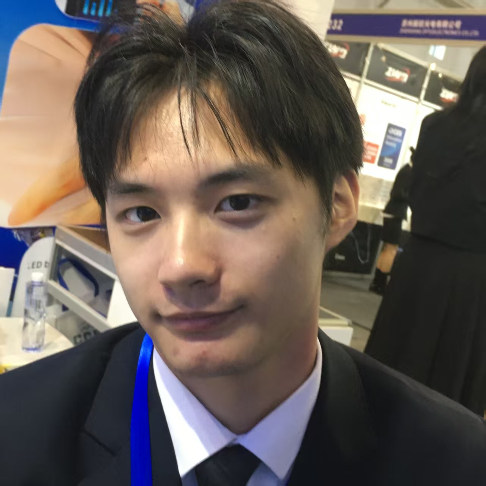

↑
HadrianLouis
按 Esc 返回

吕浩頔
Hadrian Louis
Portrait of an ENTJ Scholar, 2026
关于我
你好，我是吕浩頔。我目前就读于兰州理工大学外国语学院，学业与综合排名连续五个学期位列专业双第一，GPA 达到 4.1/5（平均分 90.74）。我曾被公费选派至新加坡国立大学法学院（NUS Law）的普通法项目，系统研读英美普通法教义并掌握其推理方法。我有着优秀的双语功底与较为坚实的法学理论素养，在宁波海事法院海商审判庭实习中深得法官认可，曾独立撰写多份民事判决书并起草涉外司法报告。
我是一个出厂设置非常鲜明的 ENTJ 人格：崇尚理性与第一性原理，习惯以直觉寻找灵感，并在事后用极度严密的逻辑链条去反推验证。我崇尚减熵与长期主义，认为“可以犯错，决不自欺”是维持个人成长复利的根本途径。未来，我将矢志投身于涉外法治领域，尤其是国际航运、海商海事与跨境商事争议解决等专业赛道，用一生的时间在国际法律舞台上捍卫契约精神。
“永远要避免的就是自己骗自己。承认混沌是重启的唯一前提，推翻自己是认知复利的终极引擎。”
学术原力
连续五学期专业双料第一。系统掌握英美普通法与中国法律实体规则，融合出众的法律英语文本起草与科研检索能力。
司法实务
在最高法院国际海事司法浙江基地实习，负责撰写民事判决书，进行最新司法规范性文件研究及涉外合同、提单翻译。
求索之径
锁定PKU·STL双法系训练，立志通过顶尖 Moot 竞赛，以无可辩驳的竞技成绩克服高端法律市场信任成本。
教育背景
兰州理工大学
外国语学院 · 英语本科 (知识产权)
2023.09 — 至今
学业排名：连续5学期位列专业排名、综合排名双第一
学业绩点（GPA）：4.1/5（加权平均分 90.74 / 100）
相关课程（核心修读成绩均在90/100以上或评级为“优秀”）：英语写作、英语演讲与辩论、跨文化交际、英汉汉英笔译、科技英语、翻译信息技术、科技信息检索与论文写作、Python数据分析与可视化、刑法学、经济法理论与实务等。
新加坡国立大学
法学院 · 普通法项目
2025.08
基于商业案例分析，系统研读普通法系核心教义，深度掌握了过失侵权责任、合同违约与救济原则、合同落空以及信托责任等英美法实体规则与法律推理方法。
奉化高级中学
政史地专业组
2020.09 — 2023.06
任校团委副书记、校学生会主席、青协会长，主管团委学生工作，主持校学生会组织架构改革。
锦屏中学
中学教育
2017.09 — 2020.06
校田径集训队成员，代表学校参加2018、2019年奉化区田径运动会。
锦屏小学
小学教育
2011.09 — 2017.06
校田径集训队成员，代表学校参加2016年奉化市（区）田径运动会。
国家级荣誉
国家励志奖学金
校级一等奖学金
国家级特等奖 (全国八强)
华西地区银牌
国家级大创核心立项
国家级三等奖
数学竞赛 S 奖
司法与专业实践
中华人民共和国宁波海事法院
海商审判庭 · 法官助理
2025.01 — 2025.02
担任最高人民法院国际海事司法浙江基地海商审判庭实习法官助理，实质参与办理十三起涵盖船舶物料供应、海上货运代理、航次租船及光船租赁等涉外商事纠纷案件。
一、 核心裁判工作与文书撰写全流程参与
- 独立撰写与修订八份以上各程序民事判决书，熟练驾驭从阅卷、事实梳理、争议焦点归纳至法律适用的完整裁判逻辑。
- 深度参与标的额达一百四十六万元的海上货代纠纷，精准适用一人公司法人格否认制度，并妥善处理美元运费折算与违约金认定等复杂法律实务争议。
二、 前沿法律研判与比较法交叉研究实践
- 紧贴海事审判前沿难点，独立完成七项系统性法律分析报告与专题调研。
- 运用比较法研究路径辨析船舶停泊区法律概念，跨法域检索并系统援引中国、英国、美国联邦法规、新加坡及国际海事组织等多方海事规范论证严密法律结论。
- 撰写八千字《人民法院司法赔偿案件追偿工作实施办法》深度解读报告，全面剖析代位责任说与国家监督权说等底层理论基础。
- 针对渔业互保协会保险赔付争议出具完整报告，综合研判保险法、海商法规则及逾十年政策文件，并结合典型案例出具高质量的类案分析结论。
三、 司法运作机制深度观摩与职业素养淬炼
- 旁听多场复杂案件庭审并独立制作数万字质证与辩论摘要笔录，直观掌握法庭调查程序规范与证据规则的实务运用技巧。
- 深度协助专业法官会议运转，为疑难案件起草专项讨论报告，精准归纳现有证据与法律适用难点，熟悉海事法院疑难案件的集体决策机制。
- 协助归档最高人民法院国际海事司法中心案件卷宗，建立起贯穿立案、诉前保全、程序转换至判决执行的全局性诉讼程序认知。
小满未满法律信息咨询有限公司
实习翻译
2024.07 — 2024.09
从事公众号普法宣传文案编辑与跨境法律文本翻译工作，翻译法律文件，例如合同、条款及协议，确保法律术语翻译的准确性。在审阅和修改过程中，学习到法律文书中常用的英文术语和句型，同时负责涉外法律法规翻译有关业务对接、译后编辑等工作，并协助完成一些合同的英文翻译。
学术活动与社会工作
大学生创新创业项目
队长
2024 — 至今
带领团队基于约翰毕比模型（MBTI）与皮埃尔·布尔迪厄场域关系理论研究了基于不同性格的大学生寝室分配与和谐度优化问题，本人带领队伍开展问卷调查，问卷样本覆盖全国31个省级行政单位，整理出调研数据一份、阶段报告一份与调研图片若干并建立线上自测平台（小程序与app），通过二维码将寝室文化属性统一评估、统一管理，并撰写成果报告、调研报告、研究论文。
受邀参与上海外国语大学2024上海模拟联合国大会
联合国教科文组织 (UNESCO) · 代表
2024.11
Join in United Nations Educational, Scientific and Cultural Organization, and discuss The Global Protection and Revitalization of Endangered Languages within Linguistic Diversity in English. 参与了联合国教科文组织关于全球语言文化多样性保护措施的联合声明撰写、关于提高全球自然与人为灾害的风险应对能力以及维护国际和平与安全调查研究，同时听取了子议题关于塞浦路斯局势的演讲报告。
兰州理工大学辩论队
校队主力、教练，校级模拟法庭成员，外国语学院辩论队队长
2023 — 至今
- 任兰州理工大学辩论队教练 & 学术负责人，开设培训课程《形式逻辑学通识》。
- 兰州理工大学“红柳骄子”辩论精英赛全程最佳辩手、新生辩论赛全程最佳辩手。
- 院级 外国语学院“青春外院”辩论赛一等奖全程最佳辩手。
大学生暑期“三下乡”志愿服务活动
核心成员
2024.07
赴“静宁县大庄村”开展“双语课堂助力乡村教育振兴”的乡村支教活动，并全程进行新闻稿的撰写投递、活动对接、课程安排、学生授课；同时就当地特色产业开展“深入看产业振兴，助力乡村新发展”的产业帮扶活动，利用专业优势开展跨境贸易、电商直播赋能研究，活动受中青网报导。
技能特长
专业能力与检索
语言水平
综合素质与协作
核心技能评述
- 对各类法律、财会事务有一定的认知，基本掌握应用民法、商法、会计、财务合规等多领域知识。
- 有较强的学术研究能力与信息检索能力，独立撰写多篇学术论文并以法律英语相关研究作为毕业课题。
- 熟练使用法律数据库和主流办公软件，具备良好的案件管理和文字文档处理能力。
- 具有较强的团队合作、沟通和协调能力，能够有效地与团队成员、客户及相关专业人员进行沟通。
个人战略与自我评述
核心职业愿景与终局定位
终极目标：成为Base在香港或伦敦的顶尖国际Solicitor-Advocate。
核心领域：早期切入大宗商品国际货物买卖纠纷与Dry Shipping争议解决领域，长远战略目标是卡位并成为国内第一批商业航天领域国际仲裁的开拓者。
个人职业偏好：拒绝在涉外案件中担任单纯的中国法顾问或案件统筹“项目经理”。追求绝对的法庭掌控感、智力对抗以及直接进行交叉盘问的核心话语权。
底层理由：大宗商品与海事仲裁的底层规则完全由Common Law主导，且该领域的准入壁垒极高、利润极厚。商业航天作为未来的增量市场，其早期的规则制定权必将由传统海商领域的霸主平移。这种需要极高智力密度和强权掌控的赛道，完美契合个人对打破高壁垒和实施降维打击的野心。
雇主生态位偏好
首选雇主阵营：Magic Circle、White Shoe，以及专注于航运与争议解决的HFW、Clyde & Co。
排斥阵营：极度排斥纯非诉业务（如IPO、外商直接投资FDI、尽职调查等）。对于国内红圈所的争议解决团队，仅视其为备用退路或过渡跳板，而非终极归宿。
底层理由：在极其高端的跨国大宗商品贸易纠纷中，外资所掌握着普通法解释权和法庭辩护的主导权。国内红圈所在此类案件中通常受制于执业牌照与法系差异，只能承担中国区证据统筹和客户安抚的二传手工作。只有进入顶尖外资所的核心争议解决团队，才能接触到案件的灵魂并实现向出庭律师的进化。
核心能力构建与教育路径偏好
教育背景现状：英语专业本科（非法本）。
破局跳板首选：北京大学国际法学院（STL）的四年制J.D./J.M.双学位项目。
能力构建刚需：必须获取纯正的英文普通法肌肉记忆（合同法、侵权法底层逻辑）、严苛的全英文法律检索与写作训练（LRW），以及顶级国际模拟法庭（如Vis Moot）的绝对主力实战经验。
执业牌照目标：英国事务律师资格（SQE），暂时放弃NY Bar，将SQE作为跨越法系壁垒、获得外资所Associate头衔。
底层理由：外资所合伙人对非法本学生存在隐形歧视，且高度看重候选人即插即用的普通法实战能力。STL的四年沉浸式高压训练能够彻底洗白非法本烙印，并提供充足的时间去争取Vis Moot这一外资所最看重的“敲门砖”。相比之下，国内常规的三年制或两年制法硕（如清华非法学法硕）虽然具有极高的时间效率和国内红圈所的留用优势，但会剥夺准备Moot Court的物理时间，导致在面对SQE2口头实战考核以及外所全英文核心业务时出现严重的能力断层。
战略成本与风险偏好
时间与资金态度：愿意为获取“绝对不可替代的普通法实战技能”支付极高的溢价，包括容忍STL长达四年的学制、高昂的学费、高昂的深圳生活成本，以及前三年严禁全职实习所带来的实务履历真空期。
ROI（投资回报率）认知：摒弃追求短期安稳、快速变现和国内退路的平庸性价比逻辑。坚信以四年苦役换取未来外资所的Global Pay起薪，并最终获得在国际仲裁庭上直接与英美大律师对冲的资格，是实现个人价值最大化的终极杠杆。
底层理由：任何试图通过压缩时间（如两年制法硕）叠加短期镀金（如一年制英国LL.M.）的套利行为，都无法真正构筑出庭辩护人所需的深厚实战底盘。在最顶级的法律角斗场，能力壁垒的构建没有任何捷径可走。